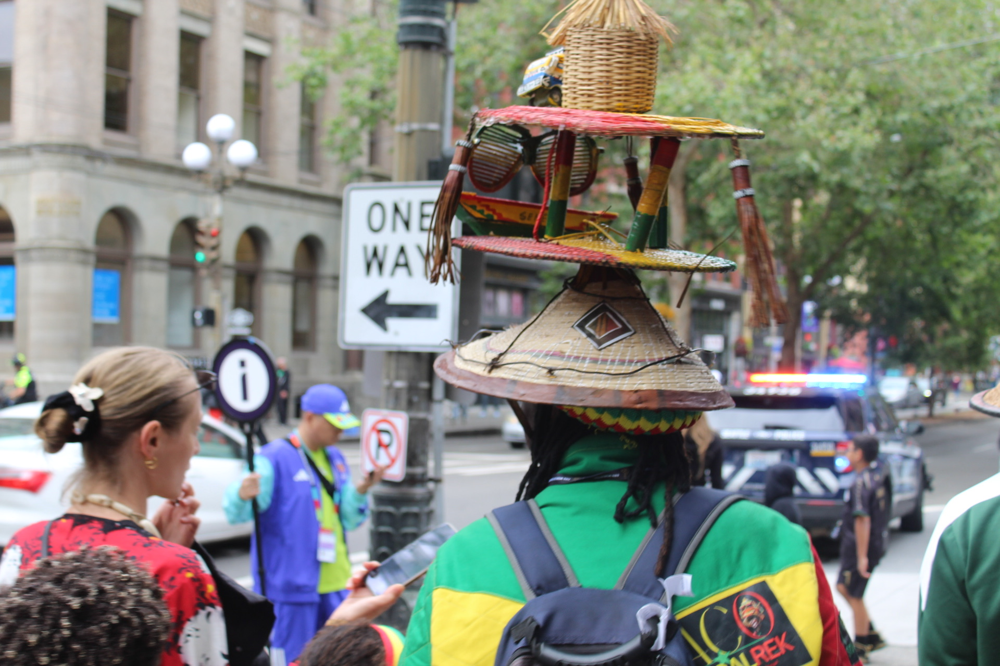
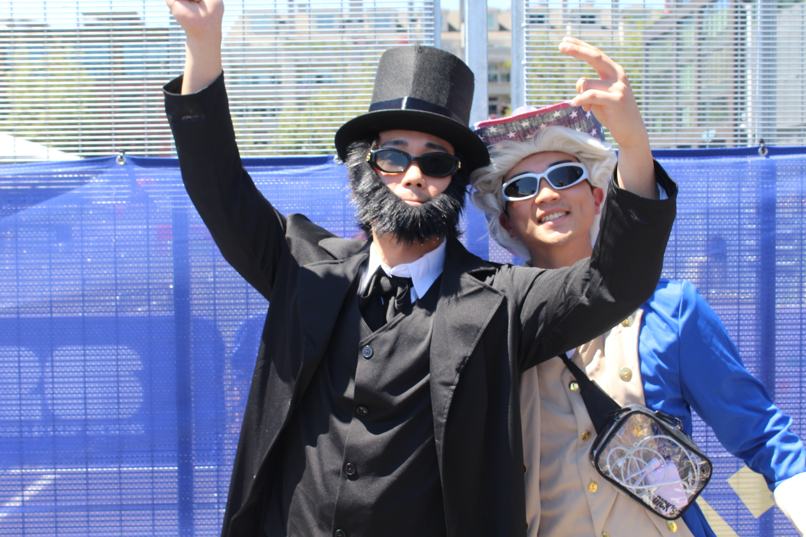
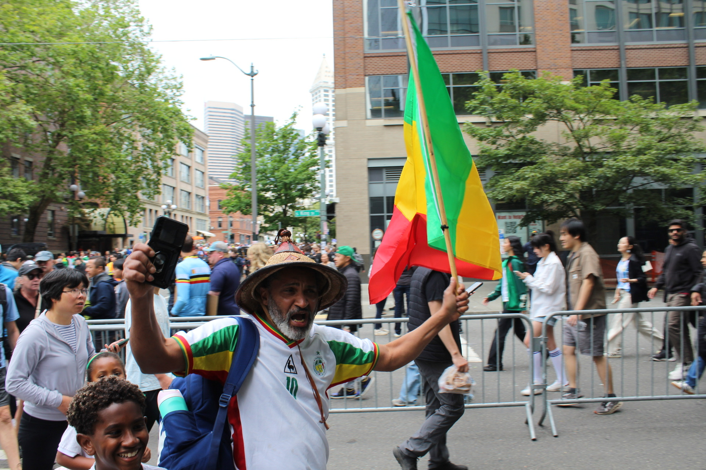
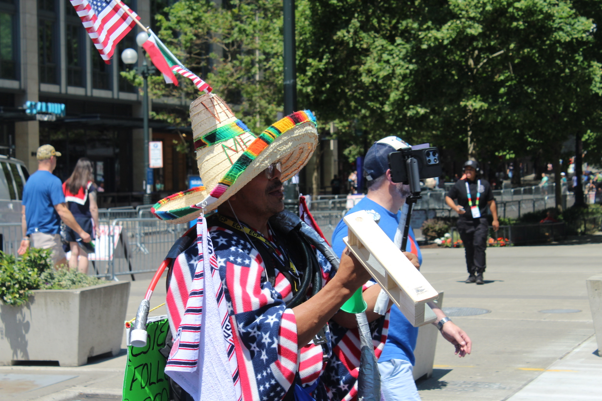

Using the Seattle Streets as a Runway:
Communicating Identity and Nationalism Through Costume at the 2026 Seattle FIFA World Cup

With the many fans who come to Seattle, it's easy to get lost in a sea of jerseys; however, what all these strangers have in common is that none of them are simply wearing team colors. They're in costume, and yes, it matters. While a jersey simply identifies, a costume argues. For a few hours at a time, the sea of jerseys parts to reveal something closer to a parade of nations: each person costumed not to disappear from the crowd but to argue, loudly and unapologetically. Discourse about individuality and national pride lay at the forefront of each wig worn and face paint drawn.
Walk through the bustling Pioneer Square on match day, through the crowd centered at Occidental Square, shoulder to shoulder with eyes focused on the giant screen, mirroring the game. Within seconds, you'll understand that you're not looking at fans; you're looking at flags and jerseys, made human.
Within each layer of face paint or traditional garment, the choice to present yourself to the global stage is intentional. Seattle's choice to be a major city is also intentional. Known for being a city rich with vibrant arts and culture, Seattle has allowed fans to embrace their inner "weird" and showcase national pride without fear of judgment, with murals proclaiming, "Seattle was made for this".
Nobody stares, or rather, everybody stares, and that's the point. When thousands of strangers congregate from six different matches, six different tournaments within the tournament, each one leaves behind a final score. This is where costumery, social identity theory, and symbolic interactionism converge.
Analyzing costumery during the 2026 World Cup through a theoretical lens helps explain why someone reaches for a national symbol at all: to secure a positive, distinct group membership. (Hogg et al., 1995). Costume is the mechanism by which that membership becomes visible and performable on a crowded Seattle street. "All dress signals the wearer's identity, but costume enhances, elaborates, and exemplifies certain dimensions of the self" (Shukla, 2015). It's one thing to say that you're a big fan, but to wear it means something different entirely. A costume is a symbol worn rather than spoken, and its meaning exists once someone else reads it and responds: a nod, a photo request, a greeting. Fandom in this sense isn't simply belonging; it's a costuming practice, a discourse over how visible one's identity claim should be.
This photo essay aims to explore how individuality and national pride are exemplified through displays of costumery. Photographing these six match days, outside of bars, security lines, or simple walks to the restaurants, simply became an exercise in watching what happens when a city built for creatives absorbed a wave of people whose creativity isn't aimed at art, but identity.

Two men, one bearded as Abraham Lincoln in his famous top hat, and the other in a colonial wig and vibrant American blue fitted vest, standing together as though pulled from different centuries and stitched into the same afternoon. The wig sits under an American flag-patterned cowboy hat, embracing the true "American Spirit." The top hat sits a little too tall, and too proud, exactly as it should. Both adorned with a modern twist: sunglasses for the hot Seattle summer day. Nothing on them says "match day." Rather than simply showing up to the match in the famous red and white stripes, they decided to showcase their national pride differently. What they're performing is American-ness itself, reflected through costume history, offered up as the frame through which their World Cup enthusiasm should be viewed.
The top hat or the cheesy powdered wig are items that are produced in the moment of interaction, in how the wearer holds themself and how onlookers respond. A faux beard is just fabric and cheap dye until someone puts it on and stands in a certain way, until a stranger catches it and registers. Symbolic interactionism helps explain the meaning in the objects that aren't immediately inherent.
That exchange matters more than usual here, in a crowd built from dozens of languages and nationalities colliding on the same street. Where words fail, where a shared language can't be assumed, costume becomes the fallback vocabulary. These symbols speak when speech can't. Thousands of people wearing the same costumes and colors turn once individual symbols into a collective identity.

The Balkan-type beat is heard echoing the streets during the Bosnia vs Qatar match. Beyond just the song, Bosnians had other ways of showcasing their fandom, from flags worn like capes to eccentric costumes, catching the eyes of all types of fans.
A woman in a Bosnia and Herzegovina jersey stands with her arm around a younger woman wearing a blue wig and a soccer ball sun hat, paired with a "BOSNIA 2026" shirt tied around her waist. A child looks on, half in frame, half his own small observer of the scene. While remaining simple, her costume still carries significant meaning in showcasing her national pride.
Social identity theory holds that people draw part of themself from the groups they belong to, and that they act to protect and elevate the group's image, a phenomenon also called positive distinctiveness (Oldmeadow, 2010). For example, a national jersey worn proudly on a foreign sidewalk is simple and unmistakably "in-group". But what stands out is how drastic the identity work is, how the distance between the two women's costumes, or lack thereof, says the same thing. One woman's team kit is a simple blue and yellow jersey, while the other woman's homage is looser and closer to costume than uniform. Social identity isn't inherited whole; it's translated across generations, each person negotiating how much of the symbol to carry and how much to reinterpret.

A man in a Senegalese national jersey moves through a crowded street, a straw hat called a Fulani tilted back, one hand raising a phone, the other gripping what appears to be the Senegalese flag, caught mid-snap in the wind. His mouth open, mid-shout or mid-cheer, impossible to tell which.
The Fulani hat remains a status symbol of cultural and material wealth. Rooted in West African tradition, the Fulani hat is named after the Fulani empire, which expanded into modern-day Senegal in the 14th century. The hat is typically made of plant fibers, with decorative patterns and leather surrounding the perimeter of the unique conical figure.
This is a body doing two things at once: documenting the moment for an audience elsewhere (the phone) and declaring group membership to the crowd around him (the flag and Fulani hat). An interactionist would call this a layered performance (Schiavio, 2019). A jack of all trades, the man is simultaneously an actor and its narrator, aware that his gesture will be replayed later for people who weren't there, for friends, family, followers scattered across time zones who weren't on the street but will be transported anyway.
The Senegal flag functions as what symbolic interactionists call a significant symbol: it carries a shared, recognizable meaning that lets a stranger in a crowd of thousands signal "I belong here" without a word exchanged. However, the Fulani hat complicates that clarity in a way that the flag doesn't. While the flag is instantly recognizable to everyone, the hat carries a deeper history, tied to Fulani herdsmen tradition across West Africa. On a regular day, most people wouldn't even bat an eye, but the World Cup has allowed people to showcase their cultures. Paired with a national jersey, it does two kinds of identity work simultaneously: one broad, and one specific and rooted. The layer of performance isn't just actor and narrator; it's also nation and culture, worn on the same body, legible at different depths, depending on who's doing the looking.

A man in a Mexican sombrero edged in a colorful ornate pattern along the rim, with "VIVA MEXICO" etched in. He covers himself with an American flag poncho or blanket draped over his shoulders, homemade wooden noisemaker and cardboard signage rigged to his body, with a phone on a selfie stick to capture it all. The sombrero does more than shade from the sun (though that's reason enough to wear one on a hot Seattle afternoon). The simple hat stands as one of the oldest visual symbols of Mexican identity, the silhouette media reaches for first when it wants to signal "Mexican" without saying the word.
What makes this photo more layered than it first appears is timing: this was taken after Mexico's elimination, following a loss to England in the round of 16. The team he's dressed for is already out of the tournament, yet he wears his sombrero with pride. Social identity theory acknowledges the presence of overlapping groups (American, Mexican, World Cup fans) rather than a single clean category. Grief for one team doesn't cancel loyalty to another; it just makes room for both.
Bibliography
- Elliott, R. D., & Meltzer, B. N. (1981). Symbolic Interactionism and Psychoanalysis: Some Convergences, Divergences, and Complementarities. Symbolic Interaction, 4(2), 225–244. https://doi.org/10.1525/si.1981.4.2.225
- Hogg, M. A., Terry, D. J., & White, K. M. (1995). A Tale of Two Theories: A Critical Comparison of Identity Theory with Social Identity Theory. Social Psychology Quarterly, 58(4), 255–269. https://doi.org/10.2307/2787127
- Lehn, D. vom, & Gibson, W. (2011). Interaction and Symbolic Interactionism. Symbolic Interaction, 34(3), 315–318. https://doi.org/10.1525/si.2011.34.3.315
- Oldmeadow, J. A., & Fiske, S. T. (2010). Social status and the pursuit of positive social identity: Systematic domains of intergroup differentiation and discrimination for high- and low- status groups. Group processes & intergroup relations : GPIR, 13(4), 10.1177/1368430209355650. https://doi.org/10.1177/1368430209355650
- Schiavio, A., Gesbert, V., Reybrouck, M., Hauw, D., & Parncutt, R. (2019). Optimizing Performative Skills in Social Interaction: Insights From Embodied Cognition, Music Education, and Sport Psychology. Frontiers in psychology, 10, 1542. https://doi.org/10.3389/fpsyg.2019.01542
- Shukla, P. (2015). CONCLUSION: Costume as Elective Identity. In Costume: Performing Identities through Dress (pp. 249–272). Indiana University Press. http://www.jstor.org/stable/j.ctt16gzhzm.11
- Stets, J. E., & Burke, P. J. (2000). Identity Theory and Social Identity Theory. Social Psychology Quarterly, 63(3), 224–237. https://doi.org/10.2307/2695870